- 00 学习指南 如何学习这门编译原理实战课？.md
- 00 开篇词 在真实世界的编译器中游历.md
- 01 编译的全过程都悄悄做了哪些事情？.md
- 02 词法分析：用两种方式构造有限自动机.md
- 03 语法分析：两个基本功和两种算法思路.md
- 04 语义分析：让程序符合语义规则.md
- 05 运行时机制：程序如何运行，你有发言权.md
- 06 中间代码：不是只有一副面孔.md
- 07 代码优化：跟编译器做朋友，让你的代码飞起来.md
- 08 代码生成：如何实现机器相关的优化？.md
- 09 Java编译器（一）：手写的编译器有什么优势？.md
- 10 Java编译器（二）：语法分析之后，还要做些什么？.md
- 11 Java编译器（三）：属性分析和数据流分析.md
- 12 Java编译器（四）：去除语法糖和生成字节码.md
- 13 Java JIT编译器（一）：动手修改Graal编译器.md
- 14 Java JIT编译器（二）：Sea of Nodes为何如此强大？.md
- 15 Java JIT编译器（三）：探究内联和逃逸分析的算法原理.md
- 16 Java JIT编译器（四）：Graal的后端是如何工作的？.md
- 17 Python编译器（一）：如何用工具生成编译器？.md
- 18 Python编译器（二）：从AST到字节码.md
- 19 Python编译器（三）：运行时机制.md
- 20 JavaScript编译器（一）：V8的解析和编译过程.md
- 21 JavaScript编译器（二）：V8的解释器和优化编译器.md
- 22 Julia编译器（一）：如何让动态语言性能很高？.md
- 23 Julia编译器（二）：如何利用LLVM的优化和后端功能？.md
- 24 Go语言编译器：把它当作教科书吧.md
- 25 MySQL编译器（一）：解析一条SQL语句的执行过程.md
- 26 MySQL编译器（二）：编译技术如何帮你提升数据库性能？.md
- 27 课前导读：学习现代语言设计的正确姿势.md
- 28 前端总结：语言设计也有人机工程学.md
- 29 中端总结：不遗余力地进行代码优化.md
- 30 后端总结：充分发挥硬件的能力.md
- 31 运行时（一）：从0到语言级的虚拟化.md
- 32 运行时（二）：垃圾收集与语言的特性有关吗？.md
- 33 并发中的编译技术（一）：如何从语言层面支持线程？.md
- 34 并发中的编译技术（二）：如何从语言层面支持协程？.md
- 35 并发中的编译技术（三）：Erlang语言厉害在哪里？.md
- 36 高级特性（一）：揭秘元编程的实现机制.md
- 37 高级特性（二）：揭秘泛型编程的实现机制.md
- 38 综合实现（一）：如何实现面向对象编程？.md
- 39 综合实现（二）：如何实现函数式编程？.md
- 40 成果检验：方舟编译器的优势在哪里？.md
- 不定期加餐1 远程办公，需要你我具备什么样的素质？.md
- 不定期加餐2 学习技术的过程，其实是训练心理素质的过程.md
- 不定期加餐3 这几年，打动我的两本好书.md
- 不定期加餐4 从身边的牛人身上，我学到的一些优秀品质.md
- 不定期加餐5 借助实例，探究C++编译器的内部机制.md
- 划重点 7种编译器的核心概念与算法.md
- 期末答疑与总结 再次审视学习编译原理的作用.md
- 热点问题答疑 如何吃透7种真实的编译器？.md
- 用户故事 易昊：程序员不止有Bug和加班，还有诗和远方.md
- 知识地图 一起来复习编译技术核心概念与算法.md
- 结束语 实战是唯一标准！.md
02 词法分析：用两种方式构造有限自动机
你好，我是宫文学。
上一讲，我带你把整个编译过程走了一遍。这样，你就知道了编译过程的整体步骤，每一步是做什么的，以及为什么要这么做。
进一步地，你就可以研究一下每个环节具体是如何实现的、有哪些难点、有哪些理论和算法。通过这个过程，你不仅可以了解每个环节的原理，还能熟悉一些专有词汇。这样一来，你在读编译原理领域的相关资料时，就会更加顺畅了。
不过，编译过程中涉及的算法和原理有些枯燥，所以我会用尽量通俗、直观的方式来给你解读，让你更容易接受。
本讲，我主要跟你讨论一下词法分析（Lexical Analysis）这个环节。通过这节课，你可以掌握词法分析这个阶段是如何把字符串识别成一个个Token的。进而，你还会学到如何实现一个正则表达式工具，从而实现任意的词法解析。
词法分析的原理
首先，我们来了解一下词法分析的原理。
通过上一讲，你已经很熟悉词法分析的任务了：输入的是字符串，输出的是Token串。所以，词法分析器在英文中一般叫做Tokenizer。
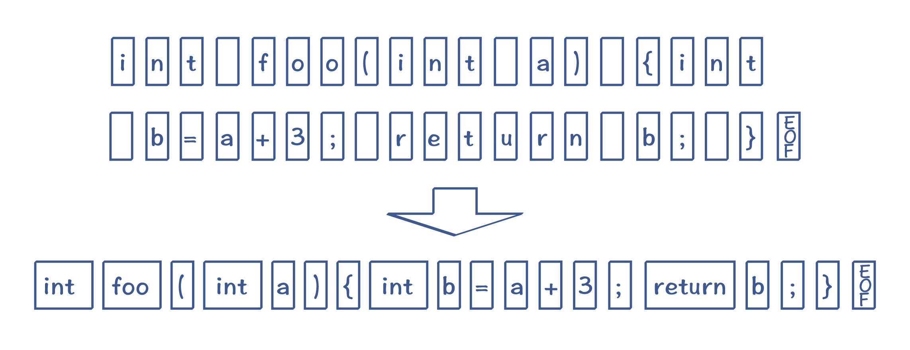
图1：把字符串转换为Token（注意：其中的空白字符，代表空格、tab、回车和换行符，EOF是文件结束符）
但具体如何实现呢？这里要有一个计算模型，叫做有限自动机（Finite-state Automaton，FSA），或者叫做有限状态自动机（Finite-state Machine，FSM）。
有限自动机这个名字，听上去可能比较陌生。但大多数程序员，肯定都接触过另一个词：状态机。假设你要做一个电商系统，那么订单状态的迁移，就是一个状态机。
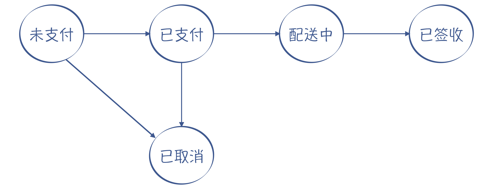
图2：状态机的例子（订单的状态和迁移过程）
有限自动机就是这样的状态机，它的状态数量是有限的。当它收到一个新字符的时候，会导致状态的迁移。比如说，下面的这个状态机能够区分标识符和数字字面量。
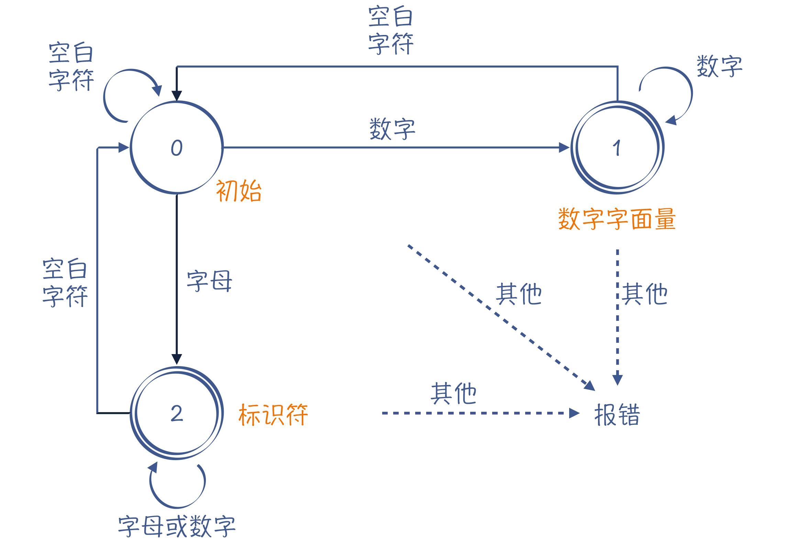
图3：一个能够识别标识符和数字字面量的有限自动机
在这样一个状态机里，我用单线圆圈表示临时状态，双线圆圈表示接受状态。接受状态就是一个合格的Token，比如图3中的状态1（数字字面量）和状态2（标识符）。当这两个状态遇到空白字符的时候，就可以记下一个Token，并回到初始态（状态0），开始识别其他Token。
可以看出，词法分析的过程，其实就是对一个字符串进行模式匹配的过程。说起字符串的模式匹配，你能想到什么工具吗？对的，正则表达式工具。
大多数语言，以及一些操作系统的命令，都带有正则表达式工具，来帮助你匹配合适的字符串。比如下面的这个Linux命令，可以用来匹配所有包含“sa”“sb” … “sh”字符串的进程。
ps -ef | grep 's[a-h]'
在这个命令里，“s[a-h]”是用来描述匹配规则的，我们把它叫做一个正则表达式。
同样地，正则表达式也可以用来描述词法规则。这种描述方法，我们叫做正则文法（Regular Grammar）。比如，数字字面量和标识符的正则文法描述是这样的：
IntLiteral : [0-9]+; //至少有一个数字
Id : [A-Za-z][A-Za-z0-9]*; //以字母开头，后面可以是字符或数字
与普通的正则表达式工具不同的是，词法分析器要用到很多个词法规则，每个词法规则都采用“Token类型: 正则表达式”这样一种格式，用于匹配一种Token。
然而，当我们采用了多条词法规则的时候，有可能会出现词法规则冲突的情况。比如说，int关键字其实也是符合标识符的词法规则的。
Int : int; //int关键字
For : for; //for关键字
Id : [A-Za-z][A-Za-z0-9]*; //以字母开头，后面可以是字符或数字
所以，词法规则里面要有优先级，比如排在前面的词法规则优先级更高。这样的话，我们就能够设计出区分int关键字和标识符的有限自动机了，可以画成下面的样子。其中，状态1、2和3都是标识符，而状态4则是int关键字。
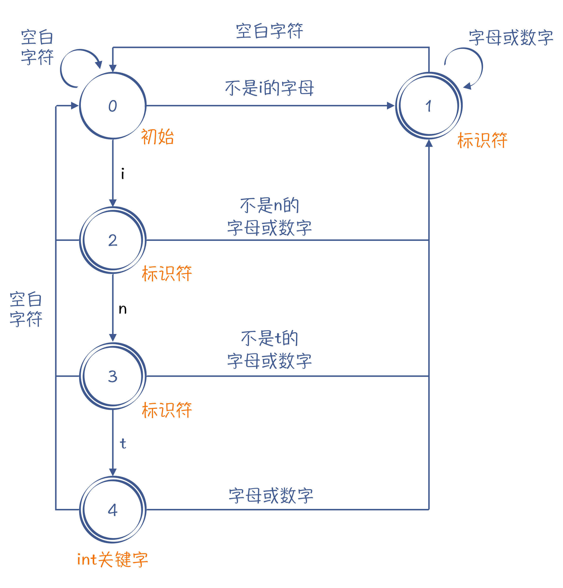
图4：一个能够识别int关键字和标识符的有限自动机
从正则表达式生成有限自动机
现在，你已经了解了如何构造有限自动机，以及如何处理词法规则的冲突。基本上，你就可以按照上面的思路来手写词法分析器了。但你可能觉得，这样手写词法分析器的步骤太繁琐了，我们能否只写出词法规则，就自动生成相对应的有限自动机呢？
当然是可以的，实际上，正则表达式工具就是这么做的。此外，词法分析器生成工具lex（及GNU版本的flex）也能够基于规则自动生成词法分析器。
它的具体实现思路是这样的：把一个正则表达式翻译成NFA，然后把NFA转换成DFA。对不起，我这里又引入了两个新的术语：NFA和DFA。
先说说DFA，它是“Deterministic Finite Automaton”的缩写，即确定的有限自动机。它的特点是：该状态机在任何一个状态，基于输入的字符，都能做一个确定的状态转换。前面例子中的有限自动机，都属于DFA。
再说说NFA，它是“Nondeterministic Finite Automaton”的缩写，即不确定的有限自动机。它的特点是：该状态机中存在某些状态，针对某些输入，不能做一个确定的转换。
这又细分成两种情况：
- 对于一个输入，它有两个状态可以转换。
- 存在ε转换的情况，也就是没有任何字符输入的情况下，NFA也可以从一个状态迁移到另一个状态。
比如，“a[a-zA-Z0-9]*bc”这个正则表达式，对字符串的要求是以a开头，以bc结尾，a和bc之间可以有任意多个字母或数字。可以看到，在图5中，状态1的节点输入b时，这个状态是有两条路径可以选择的：一条是迁移到状态2，另一条是仍然保持在状态1。所以，这个有限自动机是一个NFA。
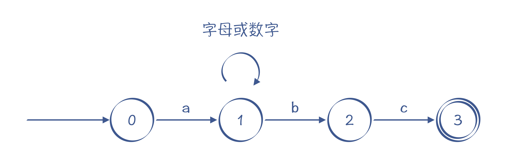
图5：一个NFA的例子，识别“a[a-zA-Z0-9]*bc”的自动机
这个NFA还有引入ε转换的画法，如图6所示，它跟图5的画法是等价的。实际上，图6表示的NFA可以用我们下面马上要讲到的算法，通过正则表达式自动生成出来。
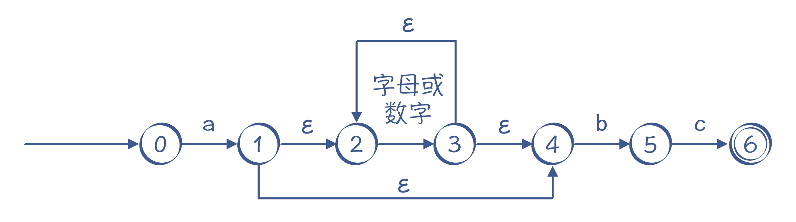
图6：另一个NFA的例子，同样能识别“a[a-zA-Z0-9]*bc”，其中有ε转换
需要注意的是，无论是NFA还是DFA，都等价于正则表达式。也就是说，所有的正则表达式都能转换成NFA或DFA；而所有的NFA或DFA，也都能转换成正则表达式。
理解了NFA和DFA以后，接下来我再大致说一下算法。
首先，一个正则表达式可以机械地翻译成一个NFA。它的翻译方法如下：
- 识别字符i的NFA。
当接受字符i的时候，引发一个转换，状态图的边上标注i。其中，第一个状态（i，initial）是初始状态，第二个状态(f，final)是接受状态。
图7：识别i的NFA
- 转换“s|t”这样的正则表达式。
它的意思是，或者s，或者t，二者选一。s和t本身是两个子表达式，我们可以增加两个新的状态：开始状态和接受状态。然后，用ε转换分别连接代表s和t的子图。它的含义也比较直观，要么走上面这条路径，那就是s，要么走下面这条路径，那就是t：
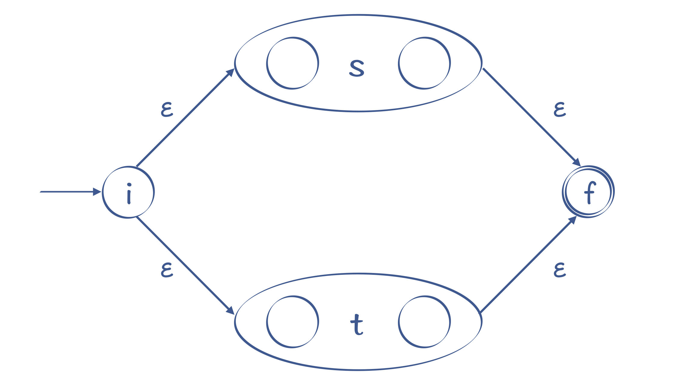
图8：识别s|t的NFA
- 转换“st”这样的正则表达式。
s之后接着出现t，转换规则是把s的开始状态变成st整体的开始状态，把t的结束状态变成st整体的结束状态，并且把s的结束状态和t的开始状态合二为一。这样就把两个子图衔接了起来，走完s接着走t。
图9：识别st的NFA
- 对于“?”“*”和“+”这样的符号，它们的意思是可以重复0次、0到多次、1到多次，转换时要增加额外的状态和边。以“s*”为例，我们可以做下面的转换：
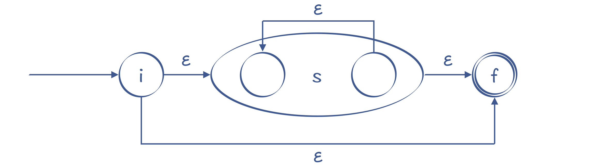
图10：识别s*的NFA
你能看出，它可以从i直接到f，也就是对s匹配0次，也可以在s的起止节点上循环多次。
如果是“s+”，那就没有办法跳过s，s至少要经过一次：
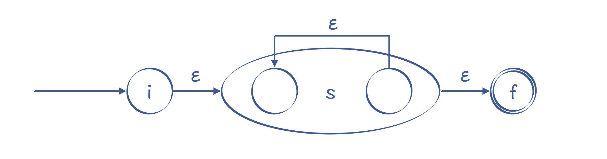
图11：识别s+的NFA
通过这样的转换，所有的正则表达式，都可以转换为一个NFA。
基于NFA，你仍然可以实现一个词法分析器，只不过算法会跟基于DFA的不同：当某个状态存在一条以上的转换路径的时候，你要先尝试其中的一条；如果匹配不上，再退回来，尝试其他路径。这种试探不成功再退回来的过程，叫做回溯（Backtracking）。
小提示：下一讲的递归下降算法里，也会出现回溯现象，你可以对照着理解。
基于NFA，你也可以写一个正则表达式工具。实际上，我在示例程序中已经写了一个简单的正则表达式工具，使用了Regex.java中的regexToNFA方法。如下所示，我用了一个测试用的正则表达式，它能识别int关键字、标识符和数字字面量。在示例程序中，这个正则表达式首先被表示为一个内部的树状数据结构，然后可以转换成NFA。
int | [a-zA-Z][a-zA-Z0-9]* | [0-9]*
示例程序也会将生成的NFA打印输出，下面的输出结果中列出了所有的状态，以及每个状态到其他状态的转换，比如“0 ε -> 2”的意思是从状态0通过 ε 转换，到达状态2 ：
NFA states:
0 ε -> 2
ε -> 8
ε -> 14
2 i -> 3
3 n -> 5
5 t -> 7
7 ε -> 1
1 (end)
acceptable
8 [a-z]|[A-Z] -> 9
9 ε -> 10
ε -> 13
10 [0-9]|[a-z]|[A-Z] -> 11
11 ε -> 10
ε -> 13
13 ε -> 1
14 [0-9] -> 15
15 ε -> 14
ε -> 1
我用图片来直观展示一下输出结果，分为上、中、下三条路径，你能清晰地看出解析int关键字、标识符和数字字面量的过程：
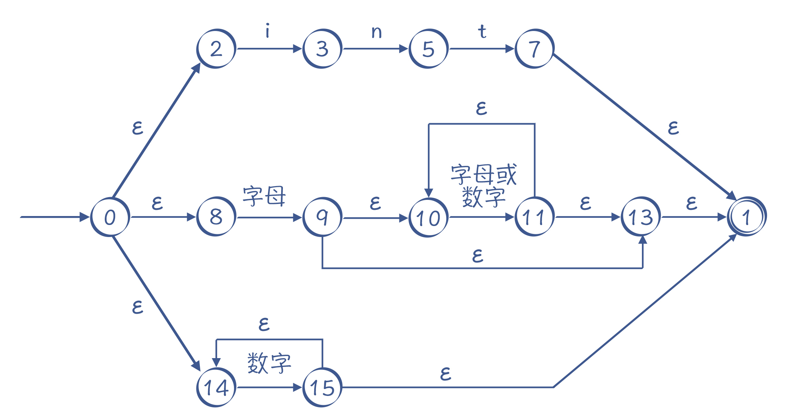
图12：由算法自动生成的NFA
那么生成NFA之后，我们要如何利用它，来识别某个字符串是否符合这个NFA代表的正则表达式呢？
还是以图12为例，当我们解析“intA”这个字符串时，首先选择最上面的路径进行匹配，匹配完int这三个字符以后，来到状态7，若后面没有其他字符，就可以到达接受状态1，返回匹配成功的信息。
可实际上，int后面是有A的，所以第一条路径匹配失败。失败之后不能直接返回“匹配失败”的结果，因为还有其他路径，所以我们要回溯到状态0，去尝试第二条路径，在第二条路径中，我们尝试成功了。
运行Regex.java中的matchWithNFA()方法，你可以用NFA来做正则表达式的匹配。其中，在匹配“intA”时，你会看到它的回溯过程：
NFA matching: 'intA'
trying state : 0, index =0
trying state : 2, index =0 //先走第一条路径，即int关键字这个路径
trying state : 3, index =1
trying state : 5, index =2
trying state : 7, index =3
trying state : 1, index =3 //到了末尾，发现还有字符'A'没有匹配上
trying state : 8, index =0 //回溯，尝试第二条路径，即标识符
trying state : 9, index =1
trying state : 10, index =1 //在10和11这里循环多次
trying state : 11, index =2
trying state : 10, index =2
trying state : 11, index =3
trying state : 10, index =3
true
从中你可以看到用NFA算法的特点：因为存在多条可能的路径，所以需要试探和回溯，在比较极端的情况下，回溯次数会非常多，性能会变得非常差。特别是当处理类似“s*”这样的语句时，因为s可以重复0到无穷次，所以在匹配字符串时，可能需要尝试很多次。
NFA的运行可能导致大量的回溯，那么能否将NFA转换成DFA，让字符串的匹配过程更简单呢？如果能的话，那整个过程都可以自动化，从正则表达式到NFA，再从NFA到DFA。
方法是有的，这个算法就是子集构造法。不过我这里就不展开介绍了，如果你想继续深入学习的话，可以去看看本讲最后给出的参考资料。
总之，只要有了准确的正则表达式，是可以根据算法自动生成对字符串进行匹配的程序的，这就是正则表达式工具的基本原理，也是有些工具（比如ANTLR和flex）能够自动给你生成一个词法分析器的原理。
课程小结
本讲涵盖了词法分析所涉及的主要知识点。词法分析跟你日常使用的正则表达式关系很密切，你可以用正则表达式来表示词法规则。
在实际的编译器中，词法分析器一般都是手写的，依据的基本原理就是构造有限自动机。不过有一些地方也会用手工编码的方式做一些优化（如javac编译器），有些编译器会做用一些特别的技巧来提升解析速度（如JavaScript的V8编译器），你在后面的课程中会看到。
基于正则表达式构造NFA，再去进行模式匹配，是一个很好的算法思路，它不仅仅可以用于做词法分析，其实还可以用于解决其他问题（比如做语法分析），值得你去做举一反三的思考。
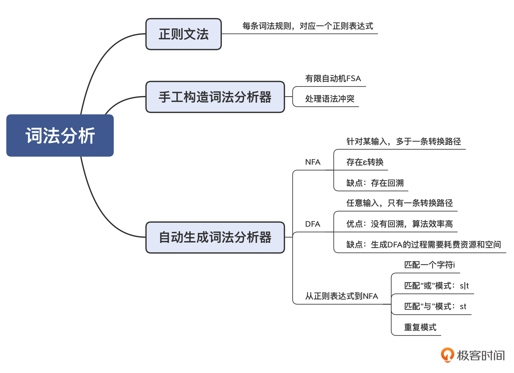
一课一思
你可以试着写出识别整型字面量和浮点型字面量的词法规则，手工构造一个有限自动机。
欢迎在留言区谈谈你的实践体会，也欢迎你把今天的内容分享给更多的朋友。
参考资料
关于从NFA转DFA的算法，你可以参考_Compilers - Principles, Techniques & Tools_（龙书，第2版）第3.7.1节，或者《编译原理之美》的第16讲。
© 2019 - 2023 Liangliang Lee. Powered by gin and hexo-theme-book.